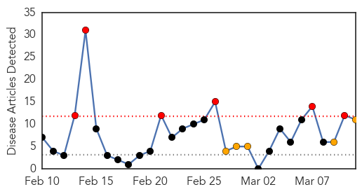

30 Day Trends
Web: 6 alerts, 5 warnings
Twitter: 0 alerts, 0 warnings
Top Articles:
- 0.993
- B.C. gears up for measles after two new Chilliwack cases
- 0.993
- Measles Is Back in Connecticut, New York and Other States
- 0.983
- Measles Outbreak in NYC Grows by 3 Cases to 19 Total
- 0.980
- As many as 100 kids in Fraser Valley, B.C. may have measles
- 0.925
- Measles alert for Sunshine Coast after infected man went to Caloundra RSL
- 0.920
- Measles outbreak originated in Netherlands
- 0.877
- Measles outbreak will not lead to mandatory vaccinations in B.C.
- 0.836
- Measles scare on Qld's Sunshine Coast
- 0.789
- Robyn Urback: Vaccines don't cause autism or usurp the role of God. They prevent measles
- 0.769
- Year’s second case of rubella confirmed in Chinese student
- 0.530
- A Mega Disaster In Waiting
Top Tweets:
-
No tweets found for Mar 11, 2014
Web/News Articles
Tweets

Article Locations

Article Confidences